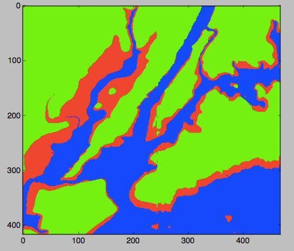

What's the noisiest street in the city? And which streets have the most collisions? What trees are most commonly planted in the streets in your neighborhood? What parts of the city are above the 100-year flood level? We will explore these and related questions using Python and publicly available data about New York City. This mini-course is organized into three sessions, each focused on a challenge, that introduces intermediate programming concepts using the Python programming language and popular packages that allow the analysis of structured data and the visualization via graphs and HTML navigable maps. The workshop, via the challenges and variations, provides a multitude of scalable projects for use in the classroom.
Prerequisites: Assumes basic knowledge of Python: familiarity with basic variable types (integers, real numbers, characters, strings and lists), input/output, definite loops (for-loop), and decisions.
Session 1: Elevation Maps (Arrays & Images)
Wednesday, 6 November 2019

Our first challenge is to build a 'flood map' of New York City metro area. We start by exploring what data is needed and how to present the information, and then introduce the numerical analysis package, numpy, to store grids (2 dimensional arrays) of elevations of the region. We then use loops and decisions to traverse the array and create an image reflecting waterways and flood regions of the metropolitan are. We introduce red-green-blue color codes to construct our flood maps. The session ends with variations on the theme of maps based on elevations, slicing (accessing subsections of arrays), and representing colors in hexadecimal codes.
- Slides: Session 1
- Concepts covered: creating and traversing 2-dimensional arrays, decisions, data representation of colors (red-green-blue codes and hexadecimal codes).
- Packages used: numpy, matplotlib.pyplot, both part of the freely-distributed anaconda release of Python.
- Data used:
- Elevation data from US National Oceanic and Atmospheric Administration (NOAA)
(Save as text, and remove 5 lines of metadata at top of file before using).
- Cleaned dataset of NYC: elevationsNYC.txt.
- References:
- The flood maps exercise is based on an on-line lab for our introductory programming course (scroll halfway down): Lab 3.
- It was inspired by a Nifty program on mountain paths by Baker Franke.
- A lovely visualization of Hurricane Sandy flooding by the New York Times.
Session 2: Analyzing City Data (Structured data & File I/O)
Wednesday, 20 November 2019

The focus for the second meeting is analyzing structured data. We will start with opening spreadsheets (CSV files) and graphing the data (a la Excel). The opening challenge is on historical population data of New York City and answering questions such as: how has the population changed over time? What fraction of the population lives in your borough? As well as demonstrating some of the basic statistics that are included (e.g. minimum, mean, correlation). We then look at some data sets from NYC OpenData: daily school attendance, homeless shelter populations, parking tickets and 311 data. Our follow-up questions include: what days have the highest attendance at your school? what color cars get the most parking tickets in your neighborhood? What is the most common 311 complaint?
- Slides: Session 2
- Concepts covered: file I/O, list (series) manipulation, basic statistics, binning data.
- Packages used: pandas, matplotlib.pyplot, both part of the freely-distributed anaconda release of Python.
Optional: seaborn for lovely statistical data visualization.
- Data used: New York City historical population (wiki) and several datasets from NYC OpenData: daily attendance, homeless shelter data, 311 calls, and parking tickets.
- Historical Population of New York City:
- 2018-2019 Daily Attendance:
- Homeless Shelter: Did not have time to cover in slides, but included below for extra challenges:
- Go to: NYC OpenData: https://data.cityofnewyork.us/Social-Services/DHS-Daily-Report/k46n-sa2m
-
Click on the "Explore Data/View Data" button. To keep the data set from being very large (and avoid some missing values in 2014), we are going filter the data to be all counts after January 1, 2018. To do this:
- Click on the "Filter" button.
- On the menu that pops us, click on "Add a New Filter Condition".
- Choose "Date of Census" but change the "is" to be "is after".
- Click in the box below and a calendar will pop up. Highlight January 1, 2018.
- Click the check box to the left of the data.
- It will take a few seconds (it's a large file) but the rows on the left
will be filtered to be all counts after January 1, 2018.
To download the file,
- Click on the "Export" button.
- Under "Download", choose "CSV".
- The download will begin automatically (files are usually stored in "Downloads" folder).
- Parking Tickets:
- Hosted at NYC OpenData: https://data.cityofnewyork.us/City-Government/Parking-Violations-Issued-Fiscal-Year-2020/pvqr-7yc4/data
- Small sample file to work with: tickets.csv
- To download data for a given neighborhood (and restricted to just a single month or year, since the data sets can be quite large):
- Instead of neighborhood name or zipcode, parking tickets are classified by the police precinct that issued the ticket. First, figure out the precinct (here's a useful tool).
- Download the data set as a CSV, filtering by "Violation Precinct." For example, Hunter College is located in the 19th Precinct, so, you would enter 19 on the filter.
- NYC Film Permits:
- 311 Calls: Did not have time to cover in slides, but included below for extra challenges:
Session 3: Mapping City Data (Using Objects & Mapping Coordinates)
Wednesday, 11 December 2019
Our opening challenge is: where do collisions occur? For this last session, we focus on mapping GIS coordinates. We introduce the folium package (a Python wrapper for leaflet.js) that makes interactive maps that be viewed in a browser (like Google maps). We then discuss how to filter data to build maps of the locations, starting with the NYC public libraries.
We then work filtering the data, and plotting collisions by GIS locations and color coding by vehicles involved (did it involve a taxi? a commercial vehicle?) and time. Our second theme focuses on comparing and clustering based on distances between the data.
We start with a challenge of finding catchment areas (Voronoi diagrams) for an
increasing number of libraries, and discuss different algorithms and their time complexity.
We explore how the results change in terms of two common distances: Euclidean (L2 metric) and taxicab (L1) metrics.
Using the collion datasets, we next consider where k tow trucks should be placed at the start of rush hour to minimize delays (using k-means clustering).
- Slides: Session 3
- Concepts covered: Using objects (instantiating and altering attributes), traversing data from files, review of coordinate systems and latitude and longitude, visualizing data (Voronoi diagrams and k-means clustering).
- Packages used:
turtle, pandas, & folium. turtle is part of every Python distribution;
pandas is included in the freely-distributed anaconda release of Python.
folium, a Python-wrapper for leaflet.js, is freely available.
- Data used: Locations of collisions in NYC, state math scores for NYC, NYC libraries (all from NY State or NYC open data projects).
- Sample folium-generated map:
- Collisions:
- NYC Math Test Scores:
- A geoJSON file with the NYC school district boundaries available from
Open Data NYC Planning
(scroll down to "School, Police, Health & Fire" and export as geoJSON).
(If you have troubles downloading, here's the file: schoolDistricts.json).
- Test scores for public schools available from:
NYC Department of Education
(download the District scores).
- A choropleth map for NYC math scores by school district:
- Libraries in NYC:
- Data2Go: Did not have time to cover in slides, but included below for extra challenges:
- Data2Go: an impressive collection of NYC data and maps (free but requires login)
- Community District Boundaries: scroll down and download the geoJSON file.
- NYC Community Districts, shaded by population:
- A sample program, cd.py, that makes a choropleth map based on the city's geoJSON map of community district boundaries and community district populations. The sample program adds extra rows for open space/parks since the geoJSON includes them, but almost all community district data files do not. The sample program includes some useful functions for aligning data from different sources.
- References: